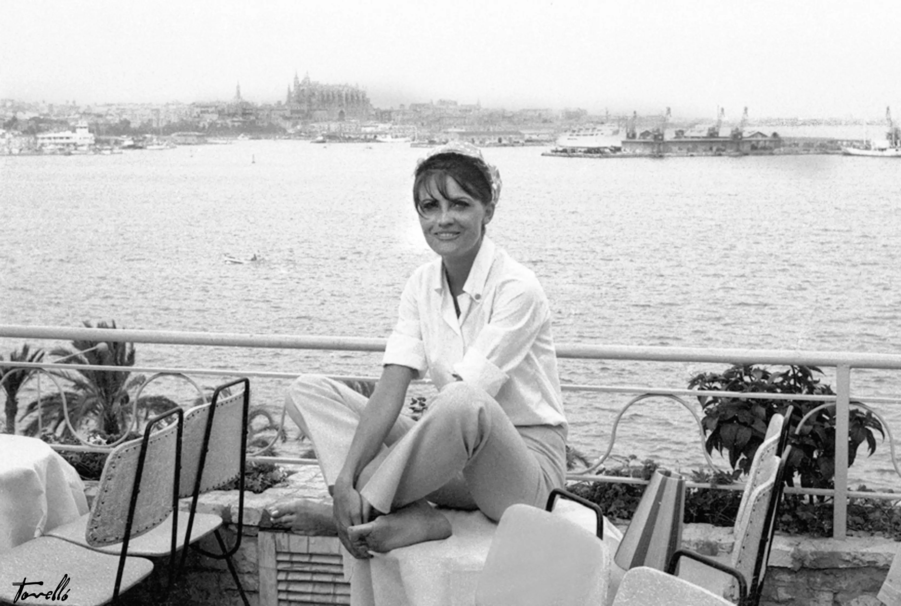

EN

Location
Located in the historic neighborhood of El Terreno, where artists, writers and intellectuals of bohemian 1960s Palma found their inspiration. This charming area maintains its authentic character while offering easy access to the city center and beaches.
Just a short walk from the iconic Bellver Castle and the vibrant Santa Catalina market, El Terreno offers the perfect balance between tranquility and urban life.
Palma de Mallorca Airport (PMI) is well connected with direct flights from major European cities.
Easy access from the Ma-1 motorway. Free parking available nearby for our guests.
Walking distance to Santa Catalina and the historic old town with its cathedral and royal palace.
El Terreno is surrounded by fascinating attractions, from historic landmarks to pristine beaches. Discover the best of Mallorca right from our doorstep.